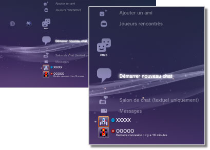

Amis > Catégorie Amis
Catégorie Amis
Pour utiliser cette fonctionnalité, vous devrez peut-être mettre à jour le logiciel système.
Pour envoyer ou recevoir des messages, ou encore pour discuter avec d'autres utilisateurs PS3™ sur PlayStation®Network. Vous devez créer (en vous inscrivant) un compte PlayStation®Network pour utiliser ces fonctionnalités. Les icônes suivantes sont affichées sous  (Amis). Les icônes affichées varient en fonction des conditions d'utilisation.
(Amis). Les icônes affichées varient en fonction des conditions d'utilisation.

| Liste des personnes ignorées | Pour afficher la liste des personnes ignorées. | |
|---|---|---|
 |
Ajouter un ami | Pour envoyer une demande afin d'ajouter quelqu'un à votre Liste d'amis. |
 |
Joueurs rencontrés | Pour afficher une liste des personnes avec lesquelles vous avez joué à des jeux en ligne au format PlayStation®3*. Sélectionnez cette icône pour envoyer un message à un joueur ou pour demander d'ajouter un ami. |
 |
Démarrer nouveau chat | Pour démarrer un chat. |
 |
Salon de chat (textuel uniquement) | Cette icône s'affiche s'il existe un salon de chat textuel. Si un nouveau salon de chat est ajouté, l'icône s'affiche. |
 |
Salon de chat vocal/vidéo | Cette icône s'affiche pendant un chat vocal / vidéo. |
 |
Messages | Pour créer de nouveaux messages et afficher des messages que vous avez reçus et envoyés. |
 |
(votre ID en ligne) | L'avatar sélectionné lors de la création de votre compte PlayStation®Network s'affiche ici. |
|
(Nom de l'ami) | Cette icône indique une personne de votre liste d'Amis. Vous pouvez la sélectionner pour envoyer et recevoir des messages ou pour discuter avec des Amis. |
| * |
Certains jeux ne prennent pas en charge cette fonctionnalité. |
|---|
Conseils
- Sur le système PS3™, les utilisateurs qui sont sur votre Liste d'amis sont appelés "Amis". De même, les e-mails que vous envoyez ou recevez sous (Amis) sont appelés "Messages".
- 50 joueurs maximum peuvent être affichés sous
 (Joueurs rencontrés). Une fois cette limite atteinte, l'entrée la plus ancienne est automatiquement supprimée à chaque ajout d'un nouveau joueur.
(Joueurs rencontrés). Une fois cette limite atteinte, l'entrée la plus ancienne est automatiquement supprimée à chaque ajout d'un nouveau joueur. - Pour utiliser le chat vocal, vous avez besoin d'un périphérique d'entrée / sortie audio (comme un casque, vendu séparément). Pour utiliser le chat vidéo, vous avez aussi besoin d'une caméra USB (vendue séparément).
- Sur le système PS3™, vous pouvez utiliser un casque USB compatible / un casque Bluetooth® / une caméra USB EyeToy™ / PlayStation®Eye / une caméra USB compatible UVC (USB Video Class).
- Lorsque vous connectez une caméra USB à l'aide d'un concentrateur (hub) USB, choisissez un concentrateur qui prend en charge USB 2.0. Si vous utilisez un concentrateur qui ne prend pas en charge USB 2.0, l'image risque de s'altérer ou de ne pas s'afficher.
- Pour plus d'informations sur les périphériques pris en charge et sur leurs instructions d'utilisation, contactez le revendeur auprès duquel vous les avez achetés.